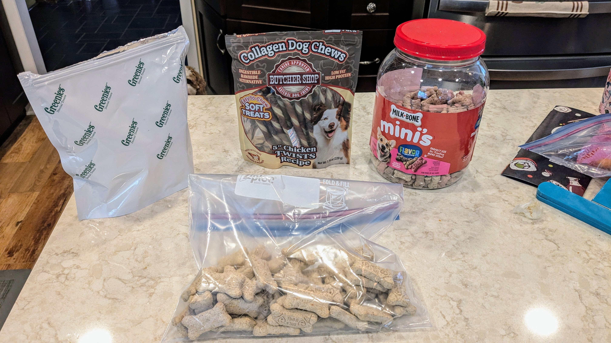
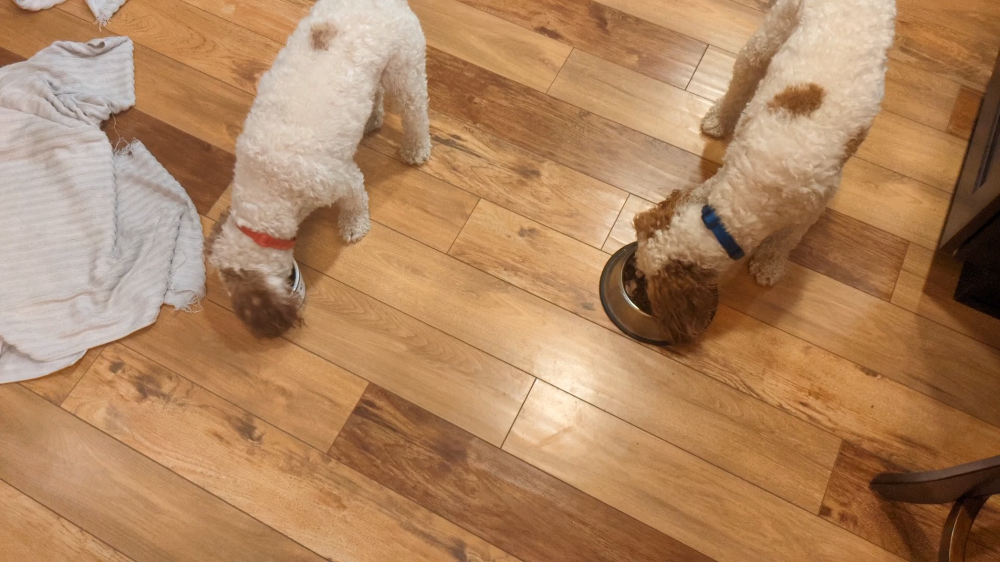

Daily Schedule - this is what they do at our house, but you do what works for you. They get mini Mik Bones whenever you feel they need a reward
- 5 am - take them out for a pee in the front yard. They might or might not poop. I give them a mini Milk Bone, but in the early morning they are not always interested
- I exercise, have breakfast, get ready for work. The dogs mostly sleep/keep an eye on me
- 7 am - dog breakfast
- after breakfast - take for a walk - after this walk they get one Greenie each. Luke's teeth are not as good, so Yama will finish his and try to "help" Luke finish. If you have time, try to make sure Luke eats all of his Greenie. They will definitely poop, unless already pooped at 5
- when I leave for work -Into the puppy prison, with some water, toys and a Collagen Dog Chew each. They can last 8 - 5 without going out, but are very eager to go out to relieve themselves when someone gets home
- (12 pm If I am home I will take them for a walk at noon and give them a Milk Bone after.)
- 5pm - walk and Milk bone
- 6pm - Dinner
- after dinner - walk - maybe poop. Milk Bone after
- 9 pm - front yard for a pee
- Bed time - they sleep in my bed room. They are not allowed on beds. They get a mini Milk Bone just before lights out


I give Luke and Yama the same amout of food each. Yama will eat all he wants then leave some for Luke. The vet says Yama could lose a little weight, but Luke is good.
They are not as hungry in the morning, so I give a bit less.
I use one package of Costco chicken a day. I give a bit less than half in the morning and the remainder in the evening. I put it in a bowl of warm water and shred into small pieces. I let is soak a few minutes while measuring the rest of the ingrediants, then rinse a couple of more times to try and get the sodium out. Then I spilt between the bowls, 50/50, with a slight bias towards Luke
Morning - for each dog
- bit less than 1/4 cup dry food
- 3 pieces supplement
- 5 pieces of Raw Meals
- 3 or 4 pieces of Limited Ingredient
- half of the morning's rinsed and shredded chicken
Evening - for each dog
- 1/4 cup dry food
- 3 pieces supplement
- 8 pieces of Raw Meals
- 3 or 4 pieces of Limited Ingredient
- half of the evening's rinsed and shredded chicken
